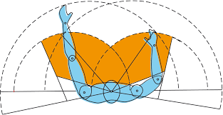

TEMÁTICA

La importancia de la Ergonomía en el entorno laboral se orienta a la productividad del hombre y de la organización, disminuyendo los riesgos profesionales inherentes de la labor, procurando mejorar las condiciones laborales. La calidad de vida de los trabajadores, necesaria para las organizaciones, se vincula directamente a las actividades productivas a través de los procesos ergonómicos.
Al terminar este objeto de aprendizaje, serás capaz de identificar y enunciar los diferentes tipos de controles y tableros que pueden ser empleados en las diferentes máquinas y herramientas que se utilizan en un proceso productivo y qué criterios considerar para que sean ergonómicos.